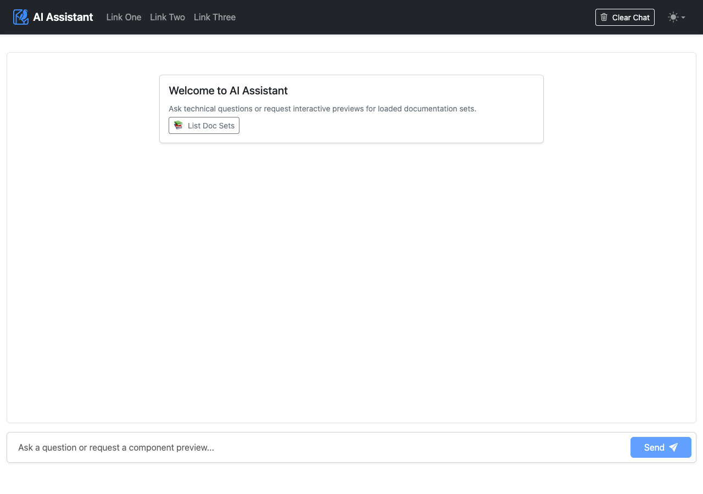

Search Bar & AI Chat Bot User Guide
User guide for searching documentation using the header search bar and running the AI Chat Assistant interfaces.
Using the Search Bar
The documentation header includes an instant full-text search bar powered by MiniSearch:
- Instant Search Results — Click the search bar or press
/to open the search modal. Type keywords to search topic titles, section headings, and body paragraphs. - Section Deep-Links — Click any search result item to jump directly to the matched section anchor within the topic.

Running the AI Chat Assistant
You can access the AI Assistant using two containerized deployment options:
Option 1: Integrated Portal Assistant (/chat)
Launch the React Harness stack using Docker Compose with your AI credentials in .env:
# Set your AI credentials in .env
CHAT_BOT_PROVIDER=gemini
GEMINI_API_KEY=your_api_key
# Launch with Docker Compose
docker compose up -dOpen your browser to http://localhost:3100/chat to start using the assistant.
Option 2: Standalone Web Chatbot Container (mcp-client)
Launch the standalone chatbot container on port 3200 using a single Docker command:
docker run -d -p 3200:3200 \
-e MCP_SERVER_URL=http://host.docker.internal:4001/mcp \
-e CHAT_BOT_PROVIDER=gemini \
-e GEMINI_API_KEY=your_api_key \
ghcr.io/jason-fox/ast-mcp-client:latestOpen your browser to http://localhost:3200.
Chat Interaction Examples
The AI Assistant chatbot handles user queries by dynamically selecting between two primary interaction models based on the intent of the prompt: Text Q&A Reasoning and Interactive Topic UI Rendering.
Example 1: Text Q&A Reasoning Interaction
Sample User Question: "Is holly a good summer flower?" (or documentation-focused request: "Which documentation set could tell me 'is holly a good summer flower'?")
When you ask factual domain questions, the AI Assistant evaluates the query against loaded documentation sets, searches the corpus, and reads topic content (flowers/concepts/winterFlowers.json). It responds with clear text reasoning:
- Direct Answer: Clarifies that Holly (Holly berry) is a winter flower, not a summer flower.
- Contextual Details: Notes that Holly blooms during winter (December–February in the Northern hemisphere).
- Summer Recommendations: Recommends summer-blooming flowers from the corpus (Gardenia, Gerbera, Iris, Lilac, Rose, Salvia).

Example 2: Interactive Topic UI Component Frame Interaction
Sample User Request: "Give me a page about Alerts"
When you ask to view a documentation page or component preview, the AI Assistant invokes the render_topic_ui tool. It embeds a live interactive topic component frame directly inside your conversation thread:
- Live Component Rendering: Displays interactive
<Alert>components (alert-primary,alert-success,alert-danger) with dismiss buttons. - Code Samples: Shows DITA XML source markup snippets for authoring the component.